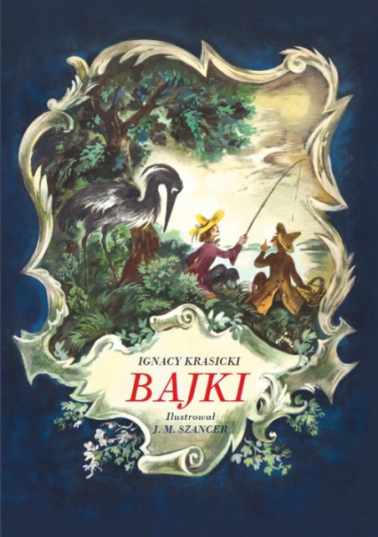

Bajki Ignacego Krasickiego |
||
| Strona główna |
Bryła lodu i kryształ Bryła lodu spłodzona z kałuży bagnistéj Gniewała się na kryształ, że był przeźroczysty. Modli się więc do słońca. Słońce zajaśniało, Szklni się bryła, ale jej coraz ubywało; I tak, chcąc los polepszyć niewczesnym kłopotem, Stajała, wsiąkła w bagno i stała się błotem. |
 |
| Lew i zwierzęta |
||
| Bryła lodu i kryształ |
||
| Potok i rzeka |
||
| Autorzy: Norbert Bańka & Jakub Drywa, klasa: 2K, źródło tekstów: link , Bajki Ignacy Krasicki |
||